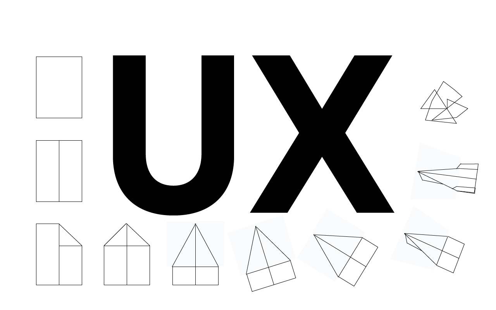
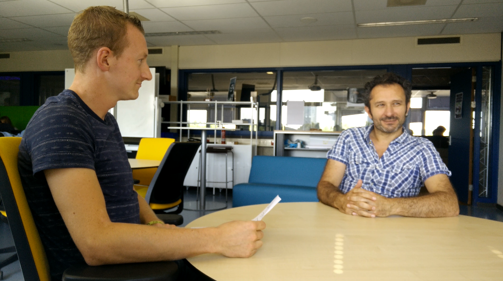
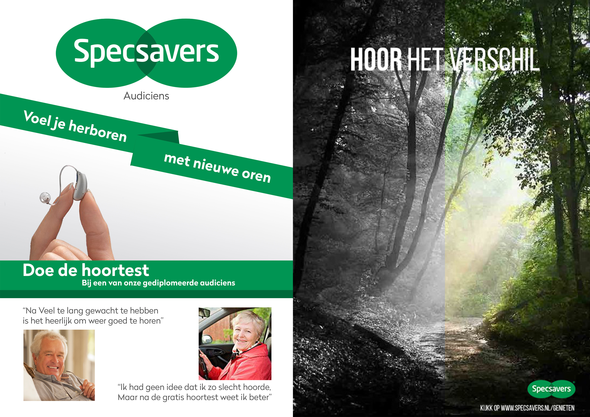
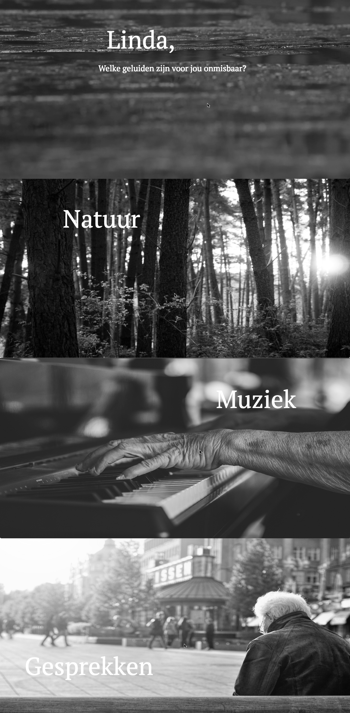

Inleiding
Hieronder vind je mijn opdrachten die ik heb gemaakt voor UX, te beginnen met de criteria zoals in de rubrics beschreven, daar direct onder staan alle opdrachten met de dingen die ik heb geleerd aan de hand van de opdrachten.
Criteria
Verplaatsen in de doelgroep dmv gebruikersonderzoeken
De student heeft op diverse momenten in het ontwikkelproces methodisch gebruikersonderzoek uitgevoerd waarbij hij tot nieuwe inzichten over de doelgroep gekomen is die verwerkt zijn in het ontwerp.
Prototypen
In het ontwikkelproces heeft de student diverse prototypen gemaakt die aansluiten bij de briefing van de klant en een weergave zijn van de user experience.
Opdrachten
Interviews
Dit alles begon natuurlijk met een onderzoeksvraag, de door ons gekozen onderzoeksvraag is, (Op welke manier komt de doelgroep in aanraking met gehoorverlies?) deze onderzoeksvraag hebben we doormiddel van veldonderzoek proberen te beantwoorden, en dan nog specifieker door mensen te interviewen, het eerste interview was met de doelgroep, hier hebben we een aantal vragen gesteld aan de doelgroep om antwoorden te krijgen die ons konden helpen met de communicatie en media strategie die we voor SCO hebben ontwikkeld, hier het daarbij behorende document.
Interview doelgroep
Tijdens het eerste interview hebben we de volgende vragen gesteld:Op een schaal van 1 t/m 10, hoe zou u uw gehoor beoordelen?
Kunt u een voorbeeld geven van een situatie waarin uw gehoor als slecht werd ervaren?
Krijgt u uit uw omgeving weleens te horen dat de radio of tv te hard staat?
Wat is uw ervaring met gehoorverlies?
Wat weet u van gehoorverlies?
Bent u weleens bij een audicien geweest?
- Zo ja waarom? (Gehoorbescherming/apparaat/test)
- Zo ja, welke merken/merk audicien?
- Aan welk merk audicien denkt u?
Heeft u weleens wat over gehoorschade opgezocht?
- Op wat voor een manier?
Heeft u weleens reclamespotjes over gehoorverlies gezien of gehoord op tv/radio?
Zou u een gehoorapparaat aanschaffen als dat nodig zou zijn?
- Zo ja, zou u daarvoor naar een audicien gaan?
- Zo nee, wat houdt u dan tegen?
Waar denkt u aan bij Specsavers? (Het mag alles zijn
Wat zijn voor u onmisbare geluiden?
Welke geluiden zou je het meest missen als je gehoorverlies zou hebben?
De laatste vraag was bedoeld om antwoorden te krijgen die we later in ons prototype konden gebruiken, een aantal hiervan waren (Gesprekken, Muziek, tv, achtergrondgeluid, natuurgeluiden) dit om mensen een stukje herkenbaarheid te laten ervaren als ze het prototype bekijken, hierover meer in het deel prototyping.
Veldonderzoek Specsavers
 Tijdens een bezoek aan een Specsavers winkel in Eindhoven hebben we een aantal vragen gesteld aan twee medewerkers in de Specsavers zaak. Opvallend was dat de medewerker van de desbetreffende winkel ons vertelde dat hij ervan overtuigd was dat mensen Specsavers nooit zouden associëren met audicien maar enkel als opticien. Toen we vroegen naar gehoorapparaten kregen we te horen dat hij weinig van gehoorapparaten af wist. Er was slechts twee dagen per week (dinsdag en donderdag) een audicien aanwezig in de winkel. Hier schrokken we van. Het enige wat hij ons kon vertellen over gehoor waren de gehoorbescherming. Aan de buitenkant van de zaak was namelijk wel te zien dat ze gehoorapparaten aanbieden, namelijk door een bord.
Tijdens een bezoek aan een Specsavers winkel in Eindhoven hebben we een aantal vragen gesteld aan twee medewerkers in de Specsavers zaak. Opvallend was dat de medewerker van de desbetreffende winkel ons vertelde dat hij ervan overtuigd was dat mensen Specsavers nooit zouden associëren met audicien maar enkel als opticien. Toen we vroegen naar gehoorapparaten kregen we te horen dat hij weinig van gehoorapparaten af wist. Er was slechts twee dagen per week (dinsdag en donderdag) een audicien aanwezig in de winkel. Hier schrokken we van. Het enige wat hij ons kon vertellen over gehoor waren de gehoorbescherming. Aan de buitenkant van de zaak was namelijk wel te zien dat ze gehoorapparaten aanbieden, namelijk door een bord.
Bevestigde vermoedens:
- Mensen wachten te lang.
- Ze worden doorgestuurd vanuit familie.
- Andere winkels (schoonenberg, beter horen) zijn populairder op het gebied van gehoor oplossingen.
Wat heb ik geleerd
Het gene wat ik hiervan heb geleerd is dat goede onderzoeksvragen belangrijk zijn, daarmee bedoel ik dat je goed moet weten wat je wilt onderzoeken en of je dat later in het proces goed kan gebruiken, dus doelgericht onderzoeken, ook vond ik het persoonlijk moeilijk om het interview niet te sturen, wat ik dus beter kan doen is het neutraal houden en niet zelf mijn mening te projecteren om de geïnterviewde, verder vond ik het lastig om mensen op straat lastig te vallen met vragen, we zijn als groep bijvoorbeeld ook bij een verzorgingstehuis langs gegaan, maar hier konden we maar lastig mensen vinden die ons konden helpen bij het onderzoek.
Prototyping
Prototype 1
Ons concept gaat veelal over emotie, hier gebruiken we een low-fi prototype om te kijken wat het gevoel is van mensen, dus vooral beelden en weinig functionaliteit, het eerste prototype was alleen een poster om te kijken wat mensen vinden van concept.
Links is de poster die ik heb gemaakt, ik dacht vooral vanuit het verschaffen van informatie aan ouderen, echter dacht ik niet echt aan hoe ouderen zich bij de beelden voelen. Rechts is de poster die we uiteindelijk hebben gekozen, omdat hier veel meer positieve reacties op kwamen door het gebruik van mooie beelden.
Wat heb ik geleerd
Hier heb ik van geleerd dat ik geen aannames moet maken, je moet neutraal blijven denken over het onderwerp en handelen vanuit onderzoek.
Prototype 2
Dit prototype ging al meer over gebruikerservaring, hoe navigeert de pagina en snappen mensen hoe ze moeten navigeren.
Hiernaast staan 4 screenshots van de pagina die we hebben gebruikt voor ons prototype, we hebben aan de hand van dit prototype de mensen laten navigeren door de pagina’s, het ging hier om hoe ze konden navigeren en welk gevoel ze hadden bij de gekozen beelden.
De eerste vraag die we stelde was, kies 5 woorden uit dit rijtje van 10 woorden waar je zelf het meeste bij voelt, de woorden waren (Droevig, Blijdschap, Natuur, Regen, Muziek, Duister, Angst, Argwaan, Licht), verder hebben we na de test een aantal vragen gesteld aan de kandidaten, dat waren de volgende vragen:
- Wat is je eerste indruk van de pagina?
- Hoe ervaar je het navigeren door de pagina?
- Is het duidelijk?
- Vind je het visueel aantrekkelijk?
- Heb je eventueel tips of andere op- of aanmerkingen?
In de deze PDF is het usability rapport terug te vinden.
Wat heb ik geleerd
Aan de hand van de woorden kregen we vrij duidelijke antwoorden, niet veel afwijken van wat we zelf wilden bereiken, echter zaten er in de gebruikerservaring wel veel verschillen, de een snapte de navigatie eigenlijk gelijk en de ander kwam er totaal niet uit, aan de hand van deze bevindingen hebben we de navigatie aangepast en hebben we het uiteindelijke prototype voorzien van een tutorial om zo de gebruikerservaring te verbeteren.